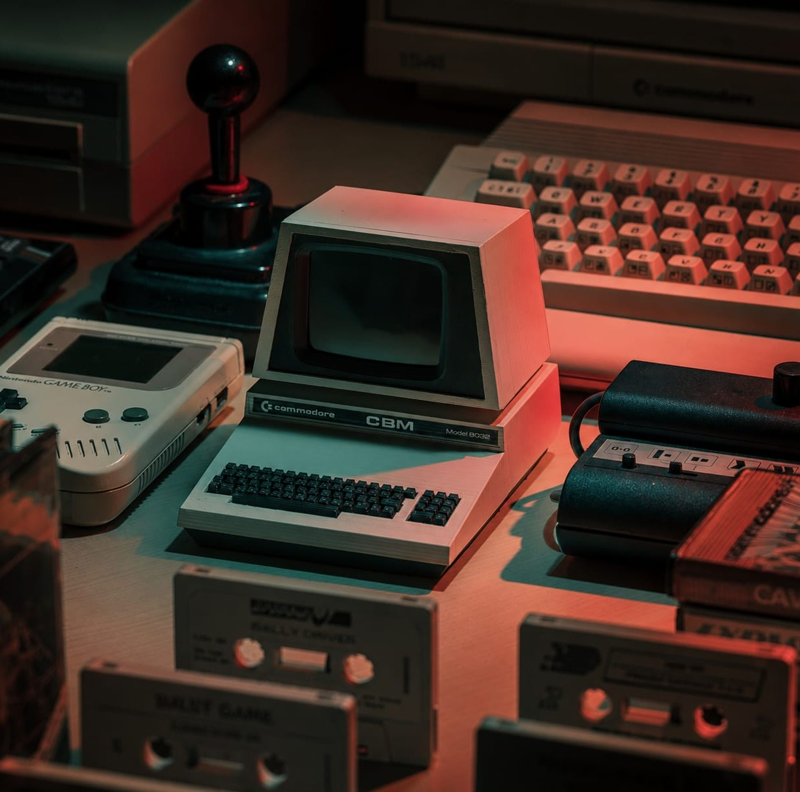
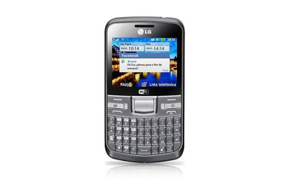
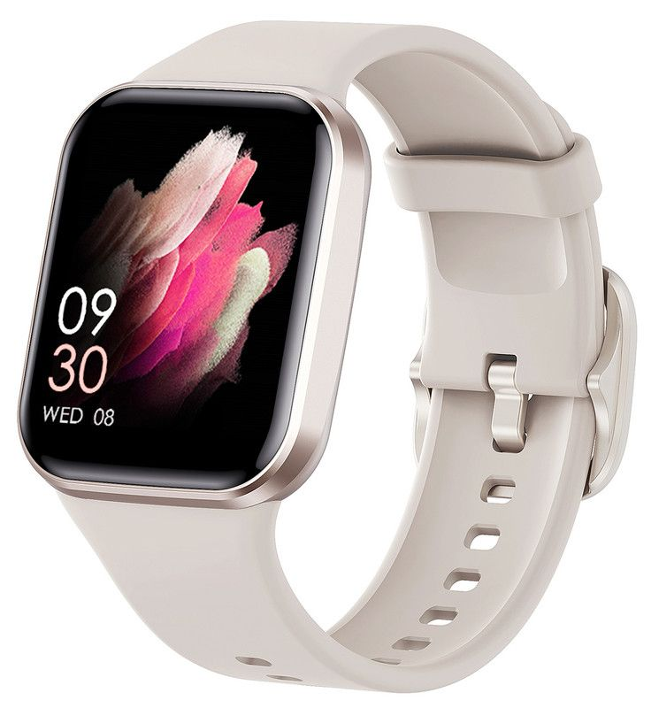
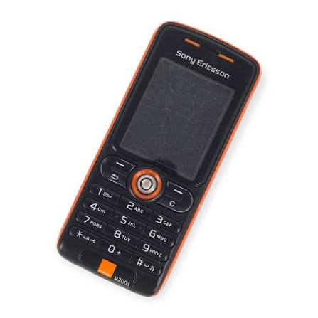

¿Puede Correr
DOOM?
Experimentación tecnológica aplicada a dispositivos no convencionales
Un proyecto de 4° y 6° año de la Escuela Técnica de Quilmes que explora los límites del hardware cotidiano a través de programación, robótica y electrónica — partiendo del icónico desafío técnico.
1. Resumen
El proyecto surge a partir del meme tecnológico que plantea ejecutar el videojuego DOOM en dispositivos electrónicos que originalmente no fueron diseñados para eso. Exploramos los límites del hardware cotidiano mediante programación, robótica y electrónica, analizando qué modificaciones son necesarias para lograrlo.
2. Introducción
La situación problemática consiste en determinar hasta qué punto dispositivos no convencionales pueden ejecutar programas complejos. El proyecto articula alumnos de 4° año de Programación y 6° año en el desarrollo del entorno web interactivo para registrar avances y difundir las experiencias.
"¿Pueden dispositivos cotidianos ejecutar software complejo? Adaptamos hardware no convencional mediante optimización de recursos para demostrar que su capacidad técnica supera su propósito original."

3. Desarrollo, Materiales y Métodos

"Superar las limitaciones físicas de procesamiento nos obligó a optimizar cada bloque de código."
Enfrentarse a sistemas con apenas unos kilobytes de memoria nos dio una perspectiva completamente nueva sobre el diseño de software eficiente y el reciclaje tecnológico.
ESET — Quilmes[ Registro del Proceso ]
Fases de desarrollo y experimentación técnica
Investigación & Recolección
Análisis técnico de sistemas embebidos y recolección de computadoras o componentes electrónicos reciclados. Uso de microcontroladores.
Pruebas de Compatibilidad
Solución a limitaciones severas de memoria RAM y procesamiento en controladores básicos mediante optimización y adaptación del software.
Productos Tecnológicos
Construcción física y programación de un brazo robótico automatizado y robots de fútbol equipados con sensores móviles.
Resultados & Evaluación
Se identificaron con éxito los límites del hardware. La optimización demostró que el hardware obsoleto rinde por encima de su diseño.
Dispositivos Analizados
DOOM (1993) requiere recursos mínimos de hardware. Partiendo de la premisa de que muchos objetos cotidianos (cajeros, impresoras, tostadoras inteligentes) poseen procesadores, memoria y pantallas, se evaluaron los siguientes teléfonos celulares bajo tres criterios clave: 1) Poseer pantalla/display, 2) Capacidad de procesar señales, y 3) Disponibilidad física para investigación.

LG C195
Cumple con los tres requisitos fundamentales (pantalla, procesamiento y disponibilidad). Fue elegido como el hardware principal del proyecto porque compilar y ejecutar DOOM en su entorno nativo de Java representa un desafío de ingeniería mucho más rico e interesante.

Reloj Inteligente
Los relojes inteligentes actuales pueden ejecutar Doom. Doom tienebajos requisitos, su código es abierto, y está escrito en lenguaje C, lo quepermite adaptarlo fácilmente a casi cualquier procesador.

Sony Ericsson
El dispositivo cumple teóricamente con la capacidad de procesamiento y ejecución mediante versiones de Java (lo cual lo hacía un candidato muy interesante). Sin embargo, no superó el tercer criterio de evaluación: el equipo no disponía del dispositivo físico para realizar las pruebas y extraer información.
5. Conclusiones finales
"El trabajo articulado fortalece las dinámicas colaborativas, vinculando contenidos curriculares con la cultura digital contemporánea."
La colaboración entre los estudiantes de 4° año y 6° año de Programación no solo facilitó la resolución de complejos desafíos de hardware, sino que estimuló de manera excepcional la creatividad y el pensamiento científico dentro de la escuela técnica.
ESET — Quilmes, 2026